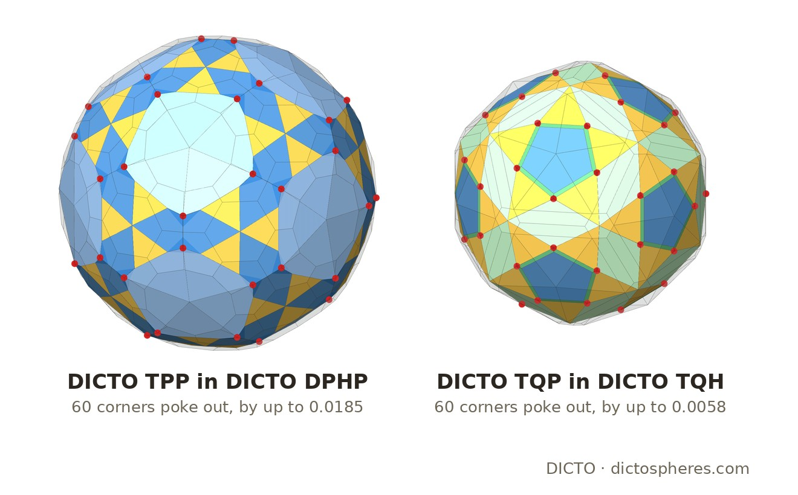
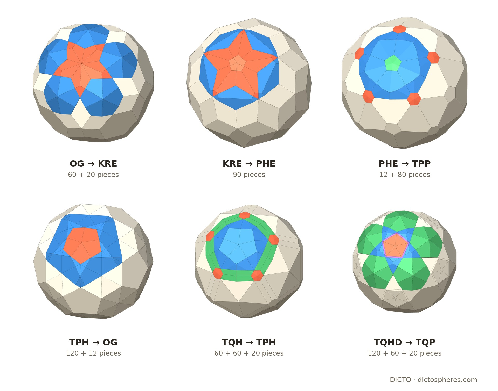

Eight new icosahedral solids grown outward and inward from the DICTO Ogdoecontahedron by one rule and its reverse, exact in ℚ(√5), with the shells between them and where the nesting breaks
Frame. As in [2]: the icosidodecahedron of circumradius φ, and the OG between it and the rhombic triacontahedron, ID ⊂ OG ⊂ RT. In this frame the OG has 102 corners (radii φ and ≈ 1.6873), 80 faces (60 kites and 20 regular hexagons) and volume (525 + 185√5)/57 ≈ 16.4679. All coordinates are pairs of rationals a + b√5 with exact signs.
The step up, T [2]: T(S) = {x : v·x ≤ v·v for every corner v of S}. The step down, P: if S has the face planes n·x = d (the centre inside, d > 0), P(S) is the convex hull of their foot points (d/n·n) n. The foot point of a face plane is the corner of P(S) whose own T-plane is that face plane, so:
Proof method (as in [2]). Floating point only guesses which faces meet at a corner; each guess is proved exactly: corners solve their faces and lie inside every face; each face holds at least three corners with the others inside it; every edge lies in exactly two faces and V − E + F = 2. Symmetry is checked with the 60 exact rotations of the icosahedral group, faces are compared by exact side lengths and corner angles, and volumes are exact sums of determinants.
| Solid | Corners | Faces | Edges | Volume | Corner radii |
|---|---|---|---|---|---|
| DICTO OG | 102 | 60 kites + 20 regular hexagons (80) | 180 | (525 + 185√5)/57 ≈ 16.4679 | 1.6180–1.6873 |
| DICTO KRE, Kite-Rhombic Enneacontahedron | 92 | 30 rhombi + 60 kites (90) | 180 | (920 + 60√5)/57 ≈ 18.4941 | 1.6520–1.7321 |
| DICTO PHE, Pentagon-Hexagon Enneacontadihedron | 180 | 12 regular pentagons + 20 regular hexagons + 60 hexagons (92) | 270 | (95875 − 1560√5)/4617 ≈ 20.0101 | 1.7046–1.7427 |
| DICTO TPP, Triangle-Pentagon Polyhedron | 212 | 60 triangles + 120 pentagons in two kinds (180) | 390 | ≈ 22.3366 | 1.7220–1.8104 |
| DICTO DPHP, Decagon-Pentagon-Hexagon Polyhedron | 270 | 12 equal-sided decagons + 20 regular hexagons + 120 pentagons (152) | 420 | ≈ 23.5434 | 1.7995–1.8095 |
Table 1. The volumes of the TPP and DPHP are exact but long; they are in data/exact_upward.json. Radii are float values of exact corners.
The KRE. Its 92 corners and 90 four-sided faces are the counts of the rhombic enneacontahedron (§5), but its faces are 30 rhombi (side² 29/18 − √5/2, side ≈ 0.7022) and 60 kites, each with two sides equal to the rhombus side and two of side² (1505 + 315√5)/6498 (side ≈ 0.5831). The PHE has the face counts of the Goldberg polyhedron GP(3,0), 12 pentagons and 80 hexagons [6, 7]; here the 12 pentagons (side² 35/18 − 5√5/6) and 20 of the hexagons (side² 1/27, side √3/9) are regular, the other 60 hexagons not. The TPP has isosceles triangles and two kinds of pentagons. The DPHP is the roundest: its corner radii differ by only 0.56%. Its decagons have ten equal sides but two alternating angles, so they are not regular (exact).
| Solid | Corners | Faces | Edges | Volume | Corner radii |
|---|---|---|---|---|---|
| DICTO TPH, Triangle-Pentagon Hecatontatriacontadihedron | 80 | 120 isosceles triangles + 12 regular pentagons (132) | 210 | (10437930 + 3959694√5)/109³ ≈ 14.8970 | 1.5115–1.5848 |
| DICTO TQH, Triangle-Quadrilateral-Hexagon Polyhedron | 132 | 60 triangles + 60 quadrilaterals + 20 regular hexagons (140) | 270 | (770805045 + 337172409√5)/(2⁴·41³·109) ≈ 12.6853 | 1.4885–1.5023 |
| DICTO TQP, Triangle-Quadrilateral-Pentagon Polyhedron | 140 | 60 triangles + 30 rhombi + 60 quadrilaterals + 12 regular pentagons (162) | 300 | ≈ 11.6524 | 1.4172–1.4931 |
| DICTO TQHD, Triangle-Quadrilateral-Hexagon Diacosihedron | 162 | 120 triangles in two kinds + 60 quadrilaterals + 20 regular hexagons (200) | 360 | ≈ 10.4208 | 1.3493–1.3948 |
Table 2. Exact volumes of the TQP and TQHD: data/exact_downward.json.
Going down, every foot point is a corner, so each solid has as many corners as the one above has faces: 80, 132, 140, 162. Going up, the corner count of the solid below is an upper bound for the faces of the one above, met at the PHE and TPP steps; the OG loses 12 (above) and the TPP 60 (§4). The downward solids leave the small golden numbers of the OG frame behind: the first step brings the prime 109 into the denominators (the TPH's pentagon side² is (4014 + 378√5)/109²), the second the prime 41. Every triangle in the family is isosceles; the regular faces are those named in the tables (exact).
When one solid lies inside the next, the shell between them is filled by one piece per face of the inner solid: the cone from the centre over that face, cut off by the outer solid [2]. All eight neighbouring pairs were checked; six nest:
| Shell | Pieces | Piece volumes | Gap |
|---|---|---|---|
| OG ⊂ KRE | 60 on kites, 20 on hexagons | (230 + 15√5)/37278 ≈ 0.00707; (429 − 145√5)/1308 ≈ 0.08010 | ≈ 2.02617 |
| KRE ⊂ PHE | 30 on rhombi, 60 on kites | 235/2916 − √5/36 ≈ 0.01848; ≈ 0.01603 | ≈ 1.51602 |
| PHE ⊂ TPP | 12 on pentagons, 60 on hexagons, 20 on regular hexagons | ≈ 0.00218; ≈ 0.03805; 409/476766 ≈ 0.000858 | ≈ 2.32644 |
| TPP, DPHP | not nested: 60 corners of the TPP lie outside the DPHP, by up to 0.0185 | ||
| TPH ⊂ OG | 120 on triangles (two mirror orbits), 12 on pentagons | ≈ 0.006748; ≈ 0.06343 | ≈ 1.57092 |
| TQH ⊂ TPH | 60 on triangles, 60 on quadrilaterals, 20 on hexagons | ≈ 0.02937; ≈ 0.007311; ≈ 0.000550 | ≈ 2.21176 |
| TQP, TQH | not nested: 60 corners of the TQP lie outside the TQH, by up to 0.0058 | ||
| TQHD ⊂ TQP | 60 + 60 on the two kinds of triangle, 60 on quadrilaterals, 20 on hexagons | ≈ 0.000016 and 0.003318; ≈ 0.000090; ≈ 0.05131 | ≈ 1.23162 |
Table 3. In every nested shell the pieces sum to the gap with remainder exactly 0, and pieces on congruent faces are congruent (one volume per symmetry orbit). Exact volumes not printed here are in data/exact_upward.json and data/exact_downward.json.
Why it breaks. Upward, T(S) contains S only if no corner w of S lies beyond another corner's plane, w·v ≤ v·v. On the TPP, whose corners lie at four radii and close together in direction, 60 corners fail this; exactly these 60 are the corners whose planes give no face of the DPHP, so the DPHP has 212 − 60 = 152 faces (exact). Going from the OG to the KRE no corner fails: the 12 lost there are the OG's five-fold corners, which become corners of the KRE. Downward, P(S) lies inside S only if every foot point falls inside its own face; 60 of the TQH's 140 face planes have their foot point outside the face, and those feet are the TQP's 60 outlying corners. So the OG family nests exactly only near the OG, OG ⊂ KRE ⊂ PHE ⊂ TPP upward and TQH ⊂ TPH ⊂ OG downward, unlike the UP cycle, whose solids nest for ever [2]. Below the break the nesting returns once (TQHD ⊂ TQP).


No cycle. From the icosidodecahedron, T returns to the start, scaled by 10/φ⁴, after four steps [2]. From the OG neither direction returns within four steps: the corner counts grow both ways (92, 180, 212, 270 up; 80, 132, 140, 162 down), and the face kinds multiply. In the plane, iterated antipedal triangles tend to the equilateral triangle [5]; the DPHP is the roundest of the nine (corner radii within 0.56%, against the OG's 4.28%), but roundness does not grow at every step (the TPP: 5.13%), and we make no claim beyond four steps.
Version 2 reads the nine solids, TQHD, TQP, TQH, TPH, OG, KRE, PHE, TPP and DPHP in the order of the chain, with two tests from other work: their harmonic fingerprint, as for the golden nests and the OG family, and their Dehn invariant, the Dehn column of The DICTO Concordance. Both are run on the float corners of the exact builds (data/og-family-solids.json). Numbers marked numerical are float values; the statements marked exact are proved.
The fingerprint [9, 14]. Give each corner of a solid, seen from its centre, a unit weight on the sphere; with qlm = (1/N) Σ Ylm(ui) over the N corner directions ui, Ql = (4π/(2l + 1) Σm |qlm|²)1/2, and Ŵ6 is the normalised third-order invariant of degree 6 built with Wigner 3j symbols [9]. Ŵ6 separates the dual pair: −0.16975 for the icosahedron (corners on the five-fold axes), +0.16975 for the dodecahedron (corners on the three-fold axes).
Proof of (a). The nine solids have the full icosahedral symmetry (§§2–3), so qlm is the projection of the corner weights onto the icosahedral invariants of degree l. The icosahedral group has no invariant spherical harmonic of degree 4 or 8, and exactly one, up to scale, of degree 6 (Klein [10]): so Q4 = Q8 = 0, and the degree-6 part of every icosahedral set is a real multiple c of one fixed harmonic. Ŵ6 is cubic in q6m and divided by the cube of its norm, so it equals the icosahedron's value times the sign of c whenever Q6 ≠ 0. Only the sign of Ŵ6 carries information in this family. □ Parts (b) and (c) are float values (method calibrated on the icosahedron, Q6 = 0.6633, the classical value [9]); the signs of (b) are far from the rounding level, since |Ŵ6| = 0.16975 for all nine and Q6 ≥ 0.032.
The sign is not the alternation of corners and faces on the axes from step to step: it records which of the two icosahedral shapes of degree 6, the icosahedron's or the dodecahedron's, outweighs the other in the corner set.
Method (numerical). Dehn(S) = Σe Le ⊗ θe over the edges, with length Le and dihedral angle θe [11]. Integer relations among the distinct dihedral angles and π are found by PSLQ [13] (coefficients up to 300, tolerance 10−8); the angles that stay are a basis independent modulo ℚπ, and Dehn(S) = 0 exactly when, for each basis angle, the edge lengths weighted by its coefficients sum to zero. Calibration on ten solids with a known answer, all correct: zero for the cube, the rhombic dodecahedron, the truncated octahedron, the rhombic triacontahedron and the tetrahedron with its corners cut off at a quarter of each edge; nonzero for the tetrahedron, the octahedron, the icosahedron, the dodecahedron and the Archimedean truncated tetrahedron. Every solid of the family has two basis angles, and its weighted sums are between 26 and 1476 times its longest edge (Table 4), where a zero shows below 10−9; the result is the same at tolerance 10−9. The rhombic triacontahedron shows that the result is not automatic for icosahedral solids: its one dihedral angle is 144° = 4π/5, and its Dehn invariant is zero. An exact proof for the eight needs their exact dihedral angles.
| Solid | Ŵ6 sign | Q6 | Q10 | Q12 | Dihedral angles | Basis angles | Smallest |sum| |
|---|---|---|---|---|---|---|---|
| DICTO TQHD | − | 0.1867 | 0.0674 | 0.0639 | 5 | 2 | 398.8 |
| DICTO TQP | − | 0.0322 | 0.1028 | 0.1213 | 4 | 2 | 44.2 |
| DICTO TQH | + | 0.2330 | 0.3846 | 0.0428 | 4 | 2 | 52.0 |
| DICTO TPH | + | 0.0529 | 0.0426 | 0.0834 | 3 | 2 | 139.6 |
| DICTO OG | − | 0.1327 | 0.0934 | 0.0265 | 2 | 2 | 49.7 (exact: nonzero) |
| DICTO KRE | − | 0.0405 | 0.0103 | 0.0038 | 2 | 2 | 49.8 |
| DICTO PHE | + | 0.0388 | 0.3206 | 0.0601 | 3 | 2 | 26.2 |
| DICTO TPP | + | 0.0933 | 0.1157 | 0.0848 | 5 | 2 | 57.2 |
| DICTO DPHP | + | 0.0370 | 0.0847 | 0.0564 | 4 | 2 | 40.6 |
Table 4 (numerical). Fingerprint (Q4 = Q8 = 0 for all nine, exact) and Dehn screen of the nine solids. Dihedral angles: the number of distinct angles at the edges; basis angles: those independent modulo ℚπ; smallest |sum|: the smaller of the two weighted edge-length sums, in units of the solid's longest edge (zero would be below 10−9). For comparison: icosahedron Q6 0.6633, dodecahedron 0.3685, icosidodecahedron 0.2073 (same method). Studies 2026-11-04-nest-fingerprint (og-fingerprint.json) and 2026-11-04-dehn-screen (data/dehn-screen.json).
In the sources checked (the full text of the 80 library sources listed in the appendix, and web searches on 20 October 2026) we did not find the eight solids, their exact shapes, the shells and pieces, or the two breaks. Claimed: the eight solids as the exact steps of T and P from the OG, their exact faces and volumes, the exact shells and their pieces, and where and why the nesting breaks; in Version 2, the exact part (a) of Proposition 1, and as numerical results its parts (b) and (c) and Proposition 2 for the eight solids other than the OG. Not claimed: the steps themselves (antipedal and pedal), the KRE's type, or anything beyond four steps.
Exact scripts (ℚ(√5)), in studies/2026-10-19-five-fold-octet at the commit above: exact_upward.py (KRE, PHE, TPP, DPHP and their shells), exact_downward.py (TPH, TQH, TQP, TQHD, T(P(S)) = S, nesting and shells), family_facts.py (the OG in this frame, P(KRE), regular faces, the OG's five-fold corners), built on exact_cycle.py and exact_shells.py from [2]. Logs and data: exact-downward.log, family-facts.log, data/exact_upward.json, data/exact_downward.json, data/family_facts.json, data/og-family-solids.json (float corners and ordered faces of all nine solids). Figures: family_figs.py, shots.mjs, family_compose.py.
Version 2 (§5, numerical apart from Proposition 1(a)). Fingerprint: studies/2026-11-04-nest-fingerprint (README.md, og-fingerprint.json: Q4, Q6, Q8, Q10, Q12 and Ŵ6 of the nine solids and of the icosahedron, dodecahedron and icosidodecahedron), method Q3d and W6 in studies/_lib/methods.py, calibrated in its test_methods.py. Dehn screen: studies/2026-11-04-dehn-screen (scripts/dehn.py, data/dehn-screen.json, README.md: the ten calibration solids and the nine solids). Both read the corners of data/og-family-solids.json of this paper's study.
The full text of the 80 sources below in DICTO's reference library was searched on 20 October 2026 for: pedal, antipedal, reciprocation, polar, canonical, foot of the perpendicular, enneacontahedron, Goldberg, kite, and the corner and face counts of the eight solids. None contains the results of this paper. The relevant hits are Goldberg's paper and the Wikipedia page on Goldberg polyhedra [6, 7], and Kabai's and Grünbaum's mentions of the rhombic enneacontahedron. Thirteen further items are page images without a text layer (the patents of Fuller, Snelson, Pearce, Baer, Hogan, Bergman and Lalvani, and Fedorov 1885).
Web searches (20 October 2026): pedal and antipedal polyhedra and their iteration; polyhedra with the counts of each of the eight solids; 30 rhombi with 60 kites; iterated polar reciprocation through perpendicular planes.
| Author(s) | Year | Title |
|---|